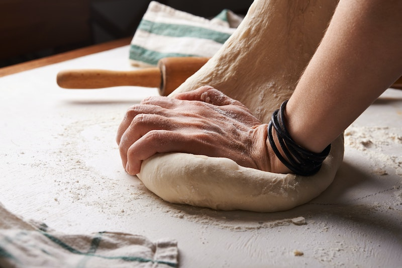

300 גרם גבינה קשה מגוררת מכל סוג שאוהבים לפיזור על הפיצה
תוספות שאוהבים —פטריות, זיתים, גבינה מלוחה וכו

שלבי ההכנה
מכינים את הבצק: מערבבים בקערה את הקמח, השמרים היבשים ואת הסוכר. יוצרים גומה בקערה שופכים לתוכה את המים, השמן והמלח, ומתחילים ללוש. מוסיפים תוך כדי לישה את 1/3 כוס המים הנוספת עד שנוצר בצק גמיש. יוצרים מהבצק כדור ומקמחים אותו קלות. מחזירים לקערה, מכסים את הקערה בניילון נצמד ומתפיחים כ-1/2 שעה
לאחר זמן התפיחה פורסים על משטח העבודה נייר אפייה מקומח קלות. לשים את הבצק בשנית ומרדדים אותו לצורה עגולה על נייר האפייה המקומח (הכמות מספיקה לפיצה אחת ענקית או שתיים בינוניות). מעבירים לתבנית ובעזרת לחיצות קלות יוצרים מעין מסגרת מסביב לפיצה
מוסיפים את השמן, מערבבים עם כף ואז את כל הקמח שנשאר ואתאופן הכנת הרוטב: מניחים במחבת עם שמן זית את העגבניות עם השום. מבשלים כמה דקותומוסיפים את הבזיליקום ואת שאר התבלינים והרסק. מסירים מהאש
מברישים בשמן זית את שולי הבצק, מורחים על בסיס הבצק את הרוטב, מפזרים גבינהותוספות שאוהבים, ואופים את הפיצה בתנור שחומם מראש ל-200 מעלות עד להשחמה